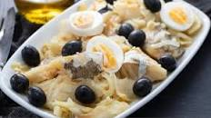
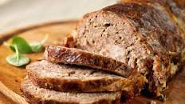
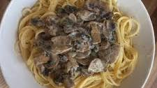

Receitas de Jantar
Desfrute de pratos incríveis para um jantar delicioso e nutritivo!

Bacalhau à Gomes de Sá
Área: Jantar
Dificuldade: Médio
Tempo de preparação: 20min
Tempo total: 1h 30min
Porções: 6 doses
Ingredientes
- 800 g água
- 1 pitada de sal
- 700 g batata cortada em rodelas
- 400 g bacalhau demolhado
- 4 ovos
- 180 g azeite
- 600 g cebola cortada em pedaços
- 2 dentes de alho
- 1 pitada de pimenta
- 1 folha de louro
- Salsa picada q.b.
- Azeitonas pretas q.b.
Preparação
- Coloque a água no copo, adicione o sal e coza as batatas e o bacalhau ao vapor.
- Retire a pele e as espinhas do bacalhau e desfie.
- Refogue a cebola, o alho e o louro no azeite.
- Disponha em camadas as batatas, o bacalhau e a cebola refogada num pirex.
- Leve ao forno a 200°C por 10 minutos.
- Sirva com ovos cozidos picados, salsa e azeitonas.

Rolo de Carne Recheado
Área: Jantar
Dificuldade: Fácil
Tempo de preparação: 10min
Tempo total: 1h
Porções: 8 doses
Ingredientes
- 1 kg carne picada
- 2 ovos
- 50 g pão ralado
- 1 cebola picada
- 2 dentes de alho picados
- 1 colher de chá de sal
- 1 pitada de pimenta
- 100 g queijo fatiado
- 100 g fiambre
- 10 fatias de bacon
Preparação
- Misture a carne com os ovos, pão ralado, cebola, alho, sal e pimenta.
- Abra a mistura em formato retangular sobre papel vegetal.
- Recheie com queijo e fiambre e enrole como um rocambole.
- Cubra com as fatias de bacon e asse a 180°C por 50 minutos.
- Sirva quente com salada ou arroz.

Massa com Cogumelos e Natas
Área: Jantar
Dificuldade: Fácil
Tempo de preparação: 10min
Tempo total: 25min
Porções: 4 doses
Ingredientes
- 300 g massa (penne ou fusilli)
- 200 g cogumelos frescos laminados
- 200 ml natas
- 1 cebola picada
- 2 dentes de alho picados
- 2 colheres de sopa de azeite
- 50 g queijo parmesão ralado
- 1 pitada de sal e pimenta
- Salsa picada q.b.
Preparação
- Cozinhe a massa em água salgada até ficar al dente.
- Refogue a cebola e o alho no azeite e adicione os cogumelos.
- Adicione as natas, tempere com sal e pimenta e cozinhe por 5 minutos.
- Escorra a massa e misture ao molho.
- Sirva com queijo parmesão e salsa picada.